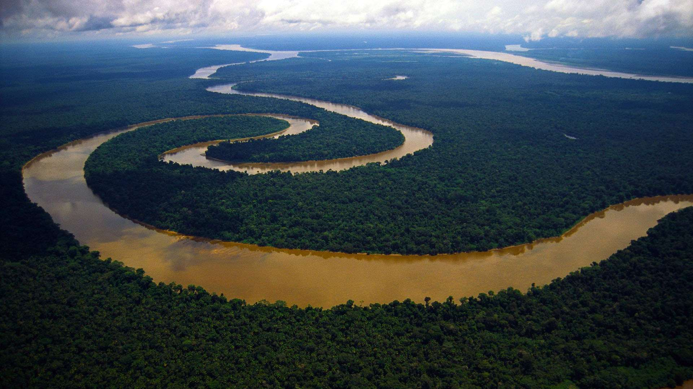

Немного о сайте
Этот сайт был создан как учебный проект. И его тематикой были "Реки мира". На сайте вы найдете несколько статей на эту тему. Ссылки на них расположены в меню правее.
А теперь немного о нашей теме
Река — природный водный поток значительных размеров с естественным течением по руслу (выработанному им естественному углублению) от истока вниз до устья и питающийся за счёт поверхностного и подземного стока с его бассейна.
Реки являются составной частью гидрологического цикла. Вода в реке, как правило, собирается с поверхностных стоков, образующихся в результате атмосферных осадков с определённой площади, ограниченной водоразделом (бассейн реки), а также из других источников, например запасов подземных вод, влаги, хранящейся в естественном льду (в процессе таяния ледников) и снеговом покрове.
В каждой реке различают место её зарождения — исток и место (участок) впадения в море, озеро или слияния с другой рекой — устье.
Реки, непосредственно впадающие в океаны, моря, озёра или теряющиеся в песках и болотах, называются главными; впадающие в главные реки — притоками. Главная река со всеми её притоками образует речную систему, характеризующуюся густотой.
Поверхность суши, с которой речная система собирает свои воды, называется водосбором или речным бассейном. Водосборная площадь вместе с верхними слоями земной коры включает в себя данную речную систему и отделяется от других речных систем водоразделами.
Реки обычно текут в вытянутых пониженных формах рельефа — долинах, наиболее пониженная часть которых называется руслом, а часть дна долины, заливаемая высокими речными водами, — поймой, или пойменной террасой.
В руслах чередуются более глубокие места — плёсы и мелководные участки — перекаты. Линия наибольших глубин русла называется тальвег, близко к которому обычно проходит судовой ход, фарватер; линия наибольших скоростей течения называется стрежнем.
Границей водотока реки называется берег, в зависимости от расположения по течению относительно средней линии русла водотока различают правый и левый берега водотока.
Источники:
Википедия. Река